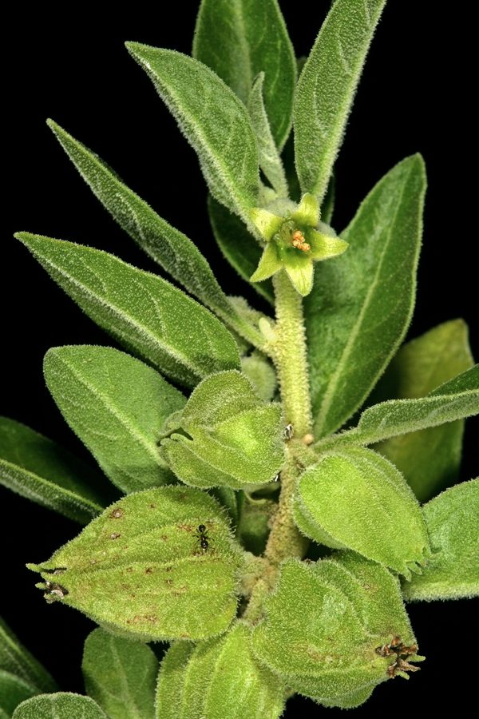

अश्वगंधाAshwagandha
Withania somnifera · Solanaceae · FLR-0083

- Scientific name
- Withania somnifera (L.) Dunal
- Family
- Solanaceae
- Hindi
- अश्वगंधा
- Status here
- native
- IUCN
- not evaluated
When to look कब देखें
Present all year.
अश्वगंधा / Ashwagandha
Withania somnifera (L.) Dunal — Solanaceae
अश्वगंधा (असगंध / विंटर चेरी / पोइज़न गूसबेरी) — पूर्वी उत्तर प्रदेश के सूखे बगीचों, औषधीय वाटिकाओं, रास्तों के किनारे की बंजर भूमि और खुले शुष्क जंगलों में पाया जाने वाला एक छोटा, बहुवर्षीय और झाड़ीदार औषधीय पौधा (woody shrub) है। इसकी ऊंचाई लगभग 60 से 150 सेमी होती है। यह आयुर्वेद का सबसे प्रसिद्ध रसायन (adaptogen) है, जिसका उपयोग शारीरिक व मानसिक स्वास्थ्य को सुधारने के लिए 3,000 से अधिक वर्षों से लगातार किया जा रहा है। इसकी सबसे बड़ी पहचान इसकी मखमली धूसर-हरी पत्तियाँ (velvety grey-green leaves), छोटे पीले-हरे घंटे के आकार के फूल और पकने पर लाल हो जाने वाली छोटी बेरी हैं जो एक पतले कागजी आवरण (like a Chinese lantern) के अंदर बंद रहती हैं। इसके नाम 'अश्वगंधा' का अर्थ है 'घोड़े की गंध' (ashwa = घोड़ा; gandha = गंध), क्योंकि इसकी ताजी जड़ों को मसलने पर घोड़े के पसीने जैसी तीखी गंध आती है, जो इसकी पहचान का मुख्य जैविक आधार है। मानसिक शांति के लिए इसे अक्सर ब्राह्मी (Brahmi, FLR-0040) के साथ पूरक के रूप में दिया जाता है।
Quick Identification त्वरित पहचान
| Feature | Description |
|---|---|
| Plant habit | Erect, branching, woody perennial shrub up to 60–150 cm high, covered in fine, star-like hairs |
| Leaves | Alternately arranged, simple, ovate, velvety greyish-green, feeling soft and slightly hairy |
| Flowers | Small (8–10 mm), bell-shaped, pale greenish-yellow, clustered in leaf axils |
| Fruit | A round, smooth, bright red berry (6–8 mm), enclosed inside an inflated, papery, straw-colored balloon calyx |
| Root | Fleshy, carrot-like, brownish-white (15–30 cm long), exuding a strong, horse-like odour |
Field tip: Look in dry, sunny fields or school medicinal gardens. Search for stocky green shrubs with soft velvety leaves. Look underneath the leaf axils for pale green hanging balloons. Peel open a dry straw-colored balloon; you will find a bright red berry inside. Dig slightly to check the root; it smells strongly of horse.
Morphology आकारिकी
Biometrics (typical measurements of mature plants in the northern Indian plains):
| Measurement | Range |
|---|---|
| Plant height | 60–150 cm |
| Leaf length | 5.0–12.0 cm |
| Leaf width | 3.0–7.0 cm |
| Flower diameter | 8–10 mm |
| Fruit calyx length | 15–20 mm |
| Berry diameter | 6–8 mm |
| Root length | 15–30 cm |
Stem and Branches: Stems are erect, round, woody at the base, covered with dense, white branched star-like (stellate) hairs that protect the plant from water loss.
Foliage: Simple, alternate or sub-opposite leaves. The leaf blades are entire, smooth-edged, with a rounded base and pointed tip.
Flowers: Sessile, bisexual, 5-merous, arranged in axillary clusters (umbellate cymes). The calyx grows rapidly after fertilization to cover the fruit.
Fruit and Seeds: A globose red berry containing many small, flat, yellow, kidney-shaped seeds.
Associated Species / Interactions संबंधित प्रजातियाँ
- Complementary Nervine: Historically combined with Brahmi (Bacopa monnieri) in Ayurvedic formulations to balance nervous system vitality, where Ashwagandha provides physical strength and Brahmi improves mental focus.
- Pollinators: Flowers are visited by hoverflies, small sweat bees, and thrips for pollen.
- Root Symbiosis: Mycorrhizal fungi attach to its roots, aiding phosphorus absorption in dry soils.
Pests and Diseases कीट और रोग
- Ashwagandha Leaf Roller: caterpillars web leaves together and feed inside, turning leaves dry.
- Damping-off Blight: Caused by the fungus Phytophthora in high monsoon soil moisture, rotting the stem base.
- Root-knot Nematodes: Tiny worms attack the fleshy roots, forming swellings (galls) and stunting growth.
Traditional Preparations पारंपरिक औषधीय निर्माण
- Stress and Anxiety → Root → Dry the root in shade, grind into fine powder, and boil 3–5 g of powder in a cup of milk or water → Consume warm before bedtime.
- Physical Fatigue and Weakness → Root → Mix 2 g of dry root powder with 1 teaspoon of ghee and honey → Consume twice daily as an adaptogenic tonic.
- Joint Pain and Arthritis → Root → Boil root powder in sesame oil to prepare a medicated oil → Massage warm oil over swollen joints and painful muscles.
- Insomnia and Sleep Disorders → Root → Mix 3 g of root powder with warm milk and a pinch of nutmeg powder → Consume 30 minutes before sleep to induce calm.
- Skin Boils and Inflammation → Leaves → Grind fresh velvety leaves with a small amount of water to make a thick paste → Apply topically over boils, swellings, or minor wounds.
Expected Locally स्थानीय रूप से अपेक्षित
Not a field record. Written from published accounts for eastern Uttar Pradesh. No confirmed local sighting yet — if you have seen it, that is what the atlas needs.
अभी तक स्थानीय पुष्टि नहीं। यह विवरण प्रकाशित स्रोतों से है, किसी अवलोकन से नहीं।
A common plant in school medicinal gardens and backyard herbal beds across the Basti district, regularly observed in the Harraiya, Vikramjot, and Basti blocks. Local traditional doctors (Vaidyas) state that the wild form grows in empty sunny plots, but is increasingly cultivated due to high demand. The roots are harvested in winter when the leaves turn yellow and dry.
Distribution वितरण
Global range: Native to dry regions of South Asia, the Middle East, and parts of Africa; cultivated widely in warm dry temperate zones globally.
In India: Found wild and cultivated in dry, stony plains of northern, central, and western states.
In Uttar Pradesh: Distributed state-wide, particularly in dry central and western districts.
In Basti district / eastern UP: Regularly recorded in home gardens and school nurseries.
Research Questions शोध प्रश्न
Anyone can investigate these | कोई भी इन प्रश्नों की जाँच कर सकता है
- How many grams of dry root does a single 1-year-old Ashwagandha plant yield in Basti? — Record harvest weights.
- Does Ashwagandha leaf paste reduce the size of a skin boil faster than a warm water compress? — Track healing rates.
- What is the germination rate of Ashwagandha seeds collected from red berries inside dry calyces versus fresh green ones? — Conduct seed trials.
- How does the horse-like smell of the root change in strength when the root is dried in the sun versus shaded wind? — Evaluate smell retention.
- Does the population count of nematodes on Ashwagandha decrease when planted alongside marigold flowers in Basti? / क्या बस्ती में गेंदे के फूलों के साथ लगाने पर अश्वगंधा की जड़ों में सूत्रकृमि (Nematodes) का प्रकोप कम हो जाता है? — Compare nematode counts in mixed plots.
Similar Species मिलती-जुलती प्रजातियाँ
| Species | How to tell apart | comparison |
|---|---|---|
| Wild Cape Gooseberry (Physalis minima) | Herbaceous annual; leaves are thin, sharply toothed; flowers are yellow with dark spots; fruits are edible | रसभरी — कोमल शाकीय तना, पीले फूल, स्वादिष्ट फल |
| Black Nightshade (Solanum nigrum) | Flowers are white, star-like; berries are exposed (no balloon calyx), turning black when ripe | मकोय — सफेद तारे जैसे फूल, काले गोल छोटे फल |
| Datura (Datura metel) | Much larger plant; leaves are massive; flowers are huge (10-15 cm) white trumpets; fruit is a spiny capsule | धतूरा — बड़े पत्ते, बड़े सफेद तुरही फूल, कांटेदार फल |
Field rule: Erect branching shrub with velvety grey-green leaves, small pale greenish-yellow flowers in leaf axils, red berries in papery balloon calyces, and roots smelling of horse, is Ashwagandha.
Taxonomy & Classification वर्गीकरण
Original description. Carl Linnaeus described this species as Physalis somnifera in 1753 in his Species Plantarum (Vol. 1, p. 182). Michel Félix Dunal placed it in the genus Withania in 1852. The genus name Withania honors the British paleobotanist Henry Witham. The specific name somnifera is Latin for sleep-inducing, referencing its sedative properties.
Subspecies. Monotypic — no subspecies are currently recognised.
Family and order placement. Placed in the order Solanales, family Solanaceae (potato or nightshade family), subfamily Solanoideae, tribe Physalideae.
Phylogenetic notes. Withania somnifera belongs to the Old World clade within Solanaceae, sharing steroidal lactone pathways (withanolides) with other Withania and Tubocapsicum species as chemical defenses against chewing pests.
IUCN status rationale. Not evaluated (NE) by the IUCN Red List. It is a highly common, resilient, and widely cultivated species with no major conservation threats.
Photo Gallery फोटो गैलरी
References संदर्भ
- Dunal, M. F. (1852). Withania somnifera. In De Candolle, A. P., Prodromus Systematis Naturalis Regni Vegetabilis, Paris, Vol. 13, Part 1, p. 453. [original generic transfer]
- Linnaeus, C. (1753). Species Plantarum. Laurentii Salvii, Holmiae, Vol. 1, p. 182. [original description as Physalis somnifera]
- Brandis, D. (1906). Indian Trees. Archibald Constable & Co., London.
- Kirtikar, K. R. & Basu, B. D. (1935). Indian Medicinal Plants. Vol. III. Lalit Mohan Basu, Allahabad.
- Mirjalili, M. H., Moyano, E., Bonfill, M., Cusido, R. M. & Palazon, J. (2009). Steroidal Lactones from Withania somnifera, an Ancient Plant for Novel Medicine. Molecules.
- GBIF Occurrence Data — Withania somnifera, India (2010–2025).
Source file: species/flora/medicinal/ashwagandha.md